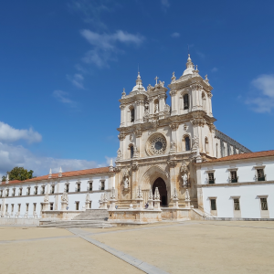
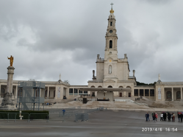
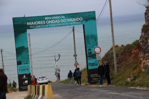
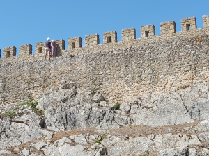
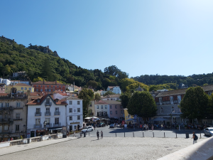

Nazaré y sus alrededores
-
Diapositivas de Alcobaça
 - Monasterio de Santa María de Alcobaça (siglo XII) Clasificado como Patrimonio Mundial por la UNESCO.
-
Diapositivas de Fátima
 - Santuario de Nuestra Señora del Rosario de Fátima. Tres niños pastores, llamados Lucía dos Santos, Jacinta y Francisco Marto, afirmaron haber presenciado varias apariciones marianas en la Cova da Iria, Fátima, en Portugal, entre el 13 de mayo y el 13 de octubre de 1917.
-
Diapositivas de Nazaré
 - La capital de las olas gigantes está en Portugal. Fue una gigantesca ola, de casi 24 metros de altura, que emergió en la Playa do Norte, el 1 de noviembre de 2011. La mayoría habría huido, pero el hawaiano Garret McNamara la cabalgó con éxito. Desde entonces, todo el mundo conoce Nazaré como la capital de las olas gigantes.
-
Diapositivas de Óbidos
 - Bonita ciudadela fortificada cerca de Nazaré. Óbidos ha sido conocida como la «Vila Das Rainhas» («villa de las reinas»), ya que desde el siglo XIII esta aldea era ofrecida por los monarcas portugueses a sus esposas a modo de regalo de boda.
-
Diapositivas de Sintra
 - Palacios y castillos. A partir de la segunda mitad del siglo xix, los habitantes más adinerados de Lisboa se trasladaron a la periferia, instalandose en esta villa.